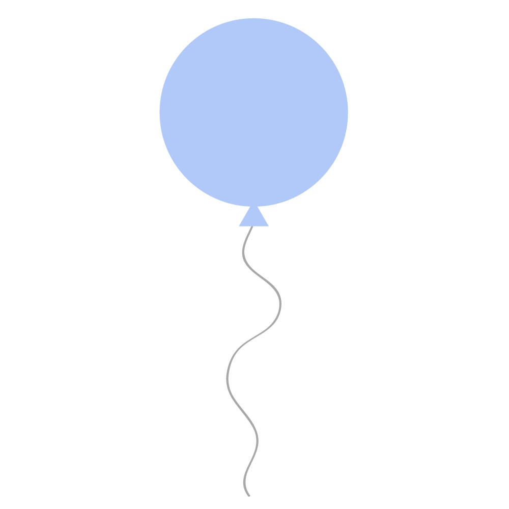
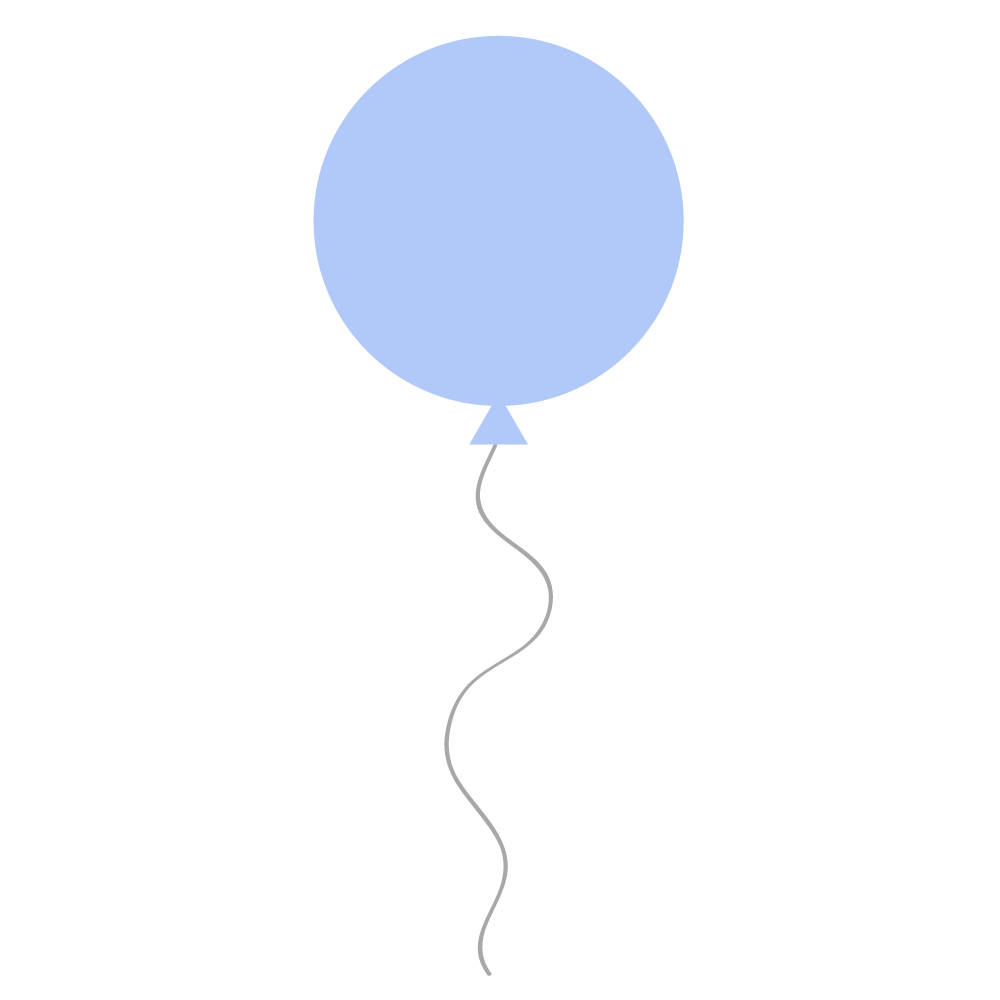

INTRO
The End of Unsafety
The Past, Present and Future
ofThe Rust Programming Language
Brian Anderson
<banderson@mozilla.com>
<banderson@mozilla.com>
Alex Crichton
<acrichton@mozilla.com>
<acrichton@mozilla.com>
https://github.com/brson/the-end-of-unsafety
~ slides, notes, links ~
Rust
- Top-tier performance (like C/C++ or better)
- Memory safe (no crashes)
- No runtime, no GC (runs everywhere)
- Targets the same use cases as C/C++ (all of them)
- Sponsored by Mozilla (makers of Firefox)
~ www.rust-lang.org ~
Timeline of the End of Unsafety
The Age of Unsafety
1972 → whenever
The Creation of Rust
2009 → present
Rust Today
right now!
The Future of Rust
present → the glorious future
The Age of Unsafety
1972 → whenever
What is "unsafe"?
Memory safety
The state of being protected from various software bugs and security vulnerabilities when dealing with memory access, such as buffer overflows and dangling pointers.— Wikipedia
Memory safety errors
- Buffer overflow
- Stack overflow
- Use after free
- Double free
- Data races
- Segmentation fault
Let's be honesthonest, if you need segfault protection, you're a bad programmer.— Anonymous good
programmer
on the internet
A real-world example
OpenSSL
Heartbleed in detail
- Missing bounds check
- Dormant for two years
- Private keys leaked

CVE-2015-7547
- glibc: getaddrinfo stack-based buffer overflow
- Multiple stack-based buffer overflows
Why keep using C/C++?
- Inertia
- Costly to rewrite
- Portability
Example: curl
- Widely used HTTP client
- Dozens of memory safety CVEs
The Creation of Rust
2009 → present

10,000,000 LOC

12,000,000 LOC
133 CVEs in 2016
203 CVEs in 2016
All 34 sec-critical bugs filed against Web Audio so far are either buffer overflows or use-after-free.— Robert O'Callahan, Mozilla
Rust's original design / requirements
- Memory safety
- Thread-local, garbage-collected heaps
- Green-threaded concurrency (ala Go)
- Memory safety
Thread-local, garbage-collected heapsGreen-threaded concurrency (ala Go)
Rust's actual design / requirements
- Memory safety
- No GC or runtime at all
- Traditional OS threads and concurrency
Rust's key design problem
How can I maintain memory safety in a concurrent program without a global GC?
Thread A
h
e
a
p 
e
a
p 
s
t
a
c
k
t
a
c
k
Thread B
h
e
a
p
e
a
p
s
t
a
c
k
t
a
c
k
Thread A
h
e
a
p
e
a
p
s
t
a
c
k
t
a
c
k
Thread B
h
e
a
p
e
a
p
s
t
a
c
k
t
a
c
k
Rust is Cyclone + Singularity
Ownership and borrowing
In Rust, every value has a single, statically-known, owning path in the code, at any time.
Pointers to values have limited duration, known as a "lifetime", that is also statically tracked.
All pointers to all values are known statically.
Rust Today
right now!
The Future of Rust
present → the glorious future
Rust soft challenges
- Acceptance / learning curve
- Competition from other languages
- Missing the market window
Challenges for Rust replacing C++
- C++ language interop
- Build system integration
Challenges for Rust replacing C
- ABI stability (upgradable dlls)
- Monomorphization (binary bloat)
- Unstructured control flow (setjmp / longjmp, goto)
Why Rust will succeed
- Incredible tech
- Production focus
- Flexible ecosystem design
- Expanded systems audience
- Strong culture
What's coming up in Rust?
- Improved ergonomics
- `tokio` (really fast async I/O)
- Docs (reference, APIs, guidelines)
- Tooling (IDEs, embedded)
- Language interop (incl. JS, Ruby, C++)
Brian Anderson
<banderson@mozilla.com>
<banderson@mozilla.com>
Alex Crichton
<acrichton@mozilla.com>
<acrichton@mozilla.com>
The End of Unsafety
https://github.com/brson/the-end-of-unsafety